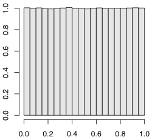

$n$ 個の数値 $x_1$，$x_2$，...，$x_n$ が与えられたとき，これらの値を代表する値（代表値）として最もよく使われるのが平均値（mean，average）
\[ \bar{x} = \frac{x_1 + x_2 + \cdots + x_n}{n} \]です。$\bar{x}$（エックス・バー）は $x$ の平均値を意味します。
平均値を意味する英語は mean と average の二通りがあります。平均値を求めるのにExcelでは average() という関数を使いますが，Rでは短いほうの mean() が関数名になっています。
> x = c(0, 7, 8, 9, 100) > mean(x) [1] 24.8
上で定義したものを相加平均または算術平均（arithmetic mean）ともいいます。これに対して，積の $n$ 乗根
\[ \sqrt[n]{x_1 x_2 \cdots x_n} \]を相乗平均または幾何平均（geometric mean）といいます。これは
\[ \log \sqrt[n]{x_1 x_2 \cdots x_n} = \frac{\log x_1 + \log x_2 + \cdots + \log x_n}{n} \]と書けるので，$x \to \log x$ という変数変換をしたときの（相加）平均です。$x > 0$ の場合しか意味を持ちません。
運動競技などの採点で，極端な点数を付ける審査員の影響を少なくするために，点数を大きさの順に並べて，両側から同数ずつ削除してから平均を求めることがあります。このような平均を，トリム平均（トリムド平均），調整平均，刈り込み平均（trimmed mean）などと呼びます。Rでは mean() に trim=... というオプションを与えて計算します。次の例では20%ずつ両側から（合わせて約40%）外します（正確には，個数×0.2 を切り捨てて整数にした個数ずつ両側から外します）。
> mean(x, trim=0.2) [1] 8
このトリム平均を推し進めて，両側からどんどん外していき，残りが1個または2個になったときのトリム平均を，中央値またはメジアン（メディアン，median）といいます（学習指導要領では中学校1年の数学に「中央値」という用語が現れます）。つまり，$x_1 \leqq x_2 \leqq \cdots \leqq x_n$ となるように並べ替えて，$n$ が奇数なら $x_{(n+1)/2}$，$n$ が偶数なら $(x_{n/2} + x_{n/2+1}) / 2$ がメジアンです。Rでは median() という関数で求めます。
> median(x) [1] 8
これら三つの代表値の使い分けとしては，データの分布が後で説明する正規分布に近いなら平均値，後で説明するコーシー分布のように極端な値が非常に多いならメジアンのほうが安定した結果が得られます。トリム平均は，分布にかかわらず，最善ではないけれども妥当な代表値となるものとして，近年よく使われています。
ウィンザライズド平均（Winsorized mean）は，両側から同数を外すところまではトリム平均と同じですが，残ったものの最大値・最小値を両側に延ばしていって，元と同じ長さにします。例えば 0,7,8,9,100 の20%ウィンザライズド平均は 7,7,8,9,9 の平均になります。Winsorは人名です。
ミッドレンジ（midrange，範囲の中央）は，最大値と最小値の平均です。分布が一様分布なら，ミッドレンジが最も安定した代表値となります。
分布の形が左右非対称の場合，例えば所得（収入）の分布のような場合に，平均値を使うかメジアンを使うかで結果が大きく異なります。どちらが正しいということはなく，全員の収入をプールして均等に再分配したらどうなるかという意味では平均値ですし，「平均的な」人の収入という意味ではメジアンのほうが妥当です。
ネットで商品や作品の評価を投票できるサイトがたくさんあります。星一つ（★☆☆☆☆）から星五つ（★★★★★）までの5段階で評価するとき，星の数のどういう代表値を表示するのが妥当でしょうか。一般にどの代表値を使っているのでしょうか。調べてみましょう。
選挙で，似た政策を掲げる候補者が複数いると，共倒れすることがよくあります。例えば，2000年のアメリカ大統領選挙では，緑の党のラルフ・ネーダーが立候補したためにゴアの票が食われたのが，ブッシュ当選の一因と考えられます。このような現象をスポイラー効果（spoiler effect）といいます。スポイラー効果を防ぐために，一人にしか投票できない今の方式をやめて，複数の候補者に点数（または順位）を付けて投票できるようにしようという運動があります（例：Range Voting）。しかし，点数（または順位）の付け方や代表値の求め方が少しずつ違うたくさんの方式が提案され，まさに共倒れ現象で，従来の多数決投票方式を変えるに至っていません。詳しくは，ウィリアム・パウンドストーン『選挙のパラドクス―なぜあの人が選ばれるのか？』（青土社，2008年）をお読みください。
ある変数 $X$ の値を調べようとすると，調べるたびに値が変わってしまうような，変な変数のことを，数学屋さんは確率変数（random variable）と呼び，コンピュータ屋さんは乱数（random numbers）と呼びます。確率変数は $X$ や $Y$ など大文字で表すことが多いようです。
上の定義はいいかげんです。以下ではさらに，毎回の値が独立（independent）であり，確率分布が同じ（identically distributed）であるという条件（i.i.d. または iid）を暗黙のうちに仮定しています。
確率変数 $X$ から $n$ 個の値 $X_1$, $X_2$, ..., $X_n$ を引き出してくることは，統計学で，非常に大きな集団（母集団，population）からランダムに $n$ 個のもの（標本，sample）を選び出してくるのと同じことだと考えられます。
一つの標本の中に $n$ 個のものが入っているのです。$n$ 個の標本というと意味が違ってきます。$n$ は標本の「個数」ではなく標本の「大きさ」（size）といいます。英語でいえば $n$ samples ではなく a sample of size $n$ といいます。もっとも，日本ではこの違いをあいまいにすることが専門家にもしばしば見られます。
確率変数 $X$ の平均値（または期待値，expectation value または expectation）とは $\bar{X} = \frac{1}{n} (X_1 + X_2 + \cdots + X_n)$ の $n \to \infty$ での極限です。これを記号で $E(X)$ または $\langle X \rangle$ と書きます。$E(X)$ の値を1文字で表したいときは，よく $\mu$（ミュー）という文字を使います。$\mu$ は英語の m に相当するギリシア文字で，mean（平均）の頭文字です。
統計学のことばでは，$\mu = E(X)$ を母平均（population mean），$n$ が有限なときの $\bar{X} = \frac{1}{n} (X_1 + X_2 + \cdots + X_n)$ を標本平均（sample mean）といいます。$E(X)$ は一定の値ですが，$X$ から取り出した $X_1$ や $X_2$ などの個々の値，およびそれから計算した $\bar{X}$ は，標本ごとに違う値になります。つまり，$X_1$ などや $\bar{X}$ も確率変数といえます。それらの期待値はいずれも同じ値です：
\[ E(X_1) = E(X_2) = \cdots = E(\bar{X}) = E(X) = \mu \]期待値については次の式が成り立ちます（$E(\cdots)$ の線形性）：
\[ E(aX + bY) = aE(X) + bE(Y) \]ここで $a$，$b$ は定数です。これは $X$ と $Y$ が独立でなくても成り立つ便利な式です。さらに $X$ と $Y$ が独立ならば
\[ E(XY) = E(X)E(Y) \]も成り立ちます。
「独立」の定義を先に言わないといけませんでした。事象 $A$，$B$ が独立とは，$A$ と $B$ がともに起こる確率は $p(A \cap B) = p(A) p(B)$ のように個々の事象が起こる確率の積に等しいことです。確率変数なら $p(X=a \wedge Y=B) = p(X=a) p(Y=b)$ と書くほうがわかりやすいですね。期待値の定義は $E(X) = \sum x_i p(X=x_i)$ と書けますから証明も簡単でしょう。
確率変数 $X$ の期待値（母平均）を $\mu = E(X)$ とするとき，$X$ と母平均との差の2乗の期待値 $E((X - \mu)^2)$ を $X$ の分散（variance），統計学のことばでは母分散（population variance）といいます。記号ではよく $V(X)$ と表しますが，分散の値を文字で表すときはよく $\sigma^2$（シグマ2乗）と表します：
\[ \sigma^2 = V(X) = E((X - \mu)^2), \qquad \mu = E(X) \]この平方根
\[ \sigma = \sqrt{E((X - \mu)^2)} \]を標準偏差（standard deviation）といいます。$\sigma$（シグマ）は英語の s に相当するギリシア文字で，standard deviation の頭文字です。S.D. あるいは SD と書くこともあります。
確率変数 $X$，$Y$ が独立なら，和の分散は分散の和です。もっと一般に，$a$ と $b$ を定数として，$V(aX + bY) = a^2 V(X) + b^2 V(Y)$ が成り立ちます。特に，$V(X \pm Y) = V(X) + V(Y)$ です。標準偏差 $\sigma$ に焼き直せば，$\sigma^2_{X \pm Y} = \sigma^2_X + \sigma^2_Y$ という「三平方の定理」が成り立ちます。
$X$ から引き出した $n$ 個の値 $X_1$，$X_2$，...，$X_n$ については，
\[ E((X_1 - \mu)^2 + (X_2 - \mu)^2 + \cdots + (X_n - \mu)^2) = n\sigma^2 \]ですが，母集団の平均値 $\mu$ は実際には知ることのできない値ですので，この代わりに標本の平均値 $\bar{X} = \frac{1}{n}(X_1 + \cdots + X_n)$ を使うと，$\mu$ を使う場合より小さめの値になります（実際，$\bar{X}$ は $(X_1 - \bar{X})^2 + \cdots + (X_n - \bar{X})^2$ を最小にします）。後で証明するように，
\[ E((X_1 - \bar{X})^2 + (X_2 - \bar{X})^2 + \cdots + (X_n - \bar{X})^2) = (n-1) \sigma^2 \]です。そこで，
\[ s^2 = \frac{1}{n-1} ((X_1 - \bar{X})^2 + (X_2 - \bar{X})^2 + \cdots + (X_n - \bar{X})^2) \]と置くと，$s^2$ の期待値は母分散に一致します（これは $X$ の分布によらず成り立ちます。正規分布などは仮定していません）：
\[ E(s^2) = \sigma^2 \]期待値が母分散に一致するということは，偏りがないということなので，$s^2$ は母分散 $\sigma^2$ の不偏推定量（an unbiased estimator of the population variance $\sigma^2$）であるといいます。あるいは，これを略して不偏分散（unbiased variance）ということもあります。
上の証明： $X = \mu + \varepsilon$ と置くと，
\[ \begin{align*} E(\varepsilon_i) &= 0 \\ E(\varepsilon_i^2) &= \sigma^2 \\ E(\varepsilon_i \varepsilon_j) &= 0 \quad (i \ne j) \end{align*} \]となります。この最後の式は $\varepsilon_i$ と $\varepsilon_j$ が独立であることから出ます（$E(\varepsilon_i \varepsilon_j)$ は後で登場する共分散です）。すると，
\[ \begin{align*} \sum_{i=1}^n E((\varepsilon_i-\bar{\varepsilon})^2) &= \sum_{i=1}^n E\left( \left( \varepsilon_i - \frac{\varepsilon_1 + \varepsilon_2 + \cdots + \varepsilon_n}{n} \right)^2 \right) \\ &= \frac{1}{n^2} \sum_{i=1}^n E((\varepsilon_1 + \cdots + (n-1)\varepsilon_i + \cdots + \varepsilon_n)^2) \end{align*} \]ですが，この右辺の2乗を展開すると $E(\varepsilon_i \varepsilon_j) = 0$ のためにクロスタームが全部消え，$E(\varepsilon_i^2) = \sigma^2$ を代入すると結局 $(n-1)\sigma^2$ だけになります。
なぜ $\sum (X_i-\bar{X})^2$ が $n$ でなく $n-1$ に比例するのかは，次のような幾何学的な議論で直感的にわかるかもしれません。$(X_1, X_2, \ldots, X_n)$ は $n$ 次元空間の点です。しかし，$(X_1-\bar{X}, X_2-\bar{X}, \ldots, X_n-\bar{X})$ は，
\[ (X_1-\bar{X}) + (X_2-\bar{X}) + \cdots + (X_n-\bar{X}) = 0 \]という一つの制約条件を満たすので，次元の一つ少ない $n-1$ 次元空間の中に制約されます。つまり，自由度が一つ少ないので，ゆらぎの2乗和もその分だけ少なくなります。$n$ 次元が難しければ，3次元や2次元で考えてみてください。
別の言い方をすれば，同じデータから平均と分散を両方求めるなら，平均を求めた時点で自由度を一つ使ってしまっているので，分散は $n-1$ で割ります。平均が別に与えられているなら $n$ で割ります。
数学的な話が続いてしまいましたが，要するに，$X$ の平均 $\mu$ が最初からわかっている場合は，分散は
\[ \frac{1}{n}\sum_{i=1}^n (X_i-\mu)^2 \]で求め，同じデータから求めた平均 $\bar{X} = (X_1 + X_2 + \cdots)/n$ を使う場合は
\[ \frac{1}{n-1}\sum_{i=1}^n (X_i-\bar{X})^2 \]で求めるのが正しいのです。しかし，高校の数学の教科書では $n-1$ の説明が難しいのでこれらを区別せずにつねに $n$ で割っています。違いは小さいので，目くじらをたてるほどのことではありませんが，大学ではちゃんと区別しましょう。以下では高校教科書の流儀を「$n$ で割る分散」，正しい流儀を「$n-1$ で割る分散」と呼ぶことにします。
標本から求めた母分散の推定量を一般に標本分散（sample variance）といいます。しかし，本によって，定義がまちまちです。
$n$ で割るものについても，呼び名はまちまちです。
母分散の推定量の記号も $s^2$ を使うものや $\hat{\sigma}^2$ を使うものがありです。
Excelには $n$ で割る分散を求める varp() という関数があります（Excel 2010以降は var.p() も同義）。$n-1$ で割る分散はExcelでもRでも var() という関数で求めます（Excel 2010以降は var.s() も同義）。Excelの varp() に相当するものはRにはありません（だってそんなものを統計学者は使わないので）が，次のように打ち込めば作ることができます：
> varp = function(x) { var(x) * (length(x)-1) / length(x) }
これらを試してみましょう：
> x = 1:3 # x = c(1,2,3) でも同じ > var(x) [1] 1 > varp(x) [1] 0.6666667
母集団からランダムに取り出した標本でなくても，例えば10個の固定した値を4個と6個に分ける場合，両者を比較するには何で割った分散を使うかという問題についても，一貫して $n-1$ で割るほうが比較としては正しくなります：
> x = 1:10 > var(x) # n-1で割る分散 [1] 9.166667 > mean(combn(x, 4, var)) # xから4個選んだ組合せのvar()の平均 [1] 9.166667 > mean(combn(x, 6, var)) # xから6個選んだ組合せのvar()の平均 [1] 9.166667 > varp(x) # nで割る分散 [1] 8.25 > mean(combn(x, 4, varp)) # xから4個選んだ組合せのvarp()の平均 [1] 6.875 > mean(combn(x, 6, varp)) # xから6個選んだ組合せのvarp()の平均 [1] 7.638889
ここで combn(x, n, func) は，ベクトル x
から n 個選んだすべての組合せについて関数 func(x)
を適用した結果からなるベクトルを求める関数です。
正規分布の場合，真の分散 $\sigma^2$ との差の2乗和を最小にするには，$n+1$ で割る方式が一番良くなります。これは，分散の分布が右に長く延びた非対称な形なので，ある程度左右に縮めたほうが平均的には誤差の2乗和が減るためです。もっとも，実用的な意味はないでしょう。
標準偏差 $\sigma = \sqrt{\sigma^2}$ を標本から求める場合には，一般に次の式を使います。
\[ s = \sqrt{s^2} = \sqrt{\frac{1}{n-1} \sum_{i=1}^n (X_i-\bar{X})^2} \]$E(s^2) = \sigma^2$ でしたが，一般に $E(s) \neq \sigma$ です。$E(s)$ と $\sigma$ がどれくらい違うかは分布の形によります。
Rで標準偏差 $s$ を求めるには sd() を使います。
> x = 1:10 > sd(x) [1] 3.027650
$n$ で割る分散 varp() の計算式は，数学上は
と変形することができますが，こうすると非常に大きい数どうしの引き算となり，桁落ちと呼ばれる数値計算上の誤差が生じやすくなります。古いExcelはこの式を使って分散や標準偏差を計算していましたが，Excel 2003で修正されました。このことは単なる一つの例ですが，概してExcelは業界標準の計算法を使っていなかったり，そもそもどういう計算法を使っているかの情報公開が不十分であったため，数値計算や統計の専門家からは「Excelを使うな！」と言われてきました。varp() はこの声を反映して修正されたものと思われます。他にもたくさんExcelのおかしなところが指摘されているのですが，Excel 2007になってもこうした外部からの指摘をMicrosoftはほとんど製品の改良に反映していないように見えます。
確率変数 $X$ の平均値 $\mu = E(X)$，分散 $\sigma^2 = E((X - \mu)^2)$ がわかっているとします。$X$ から引き出した数を $X_1$, $X_2$, ..., $X_n$ とすると，その平均値
\[ \bar{X} = \dfrac{X_1 + X_2 + \cdots + X_n}{n} \]の期待値は $\mu$ に一致します。一方，$\bar{X}$ の分散 $E((\bar{X} - \mu)^2)$ は，$\mu = 0$ の場合だけ考えればいいので，
\[ \begin{align*} E(\bar{X}^2) &= E\left( \left(\frac{X_1 + \cdots + X_n}{n} \right)^2 \right) \\ &= \frac{1}{n^2} (E(X_1^2) + \cdots + E(X_n^2)) \\ &= \frac{\sigma^2}{n} \end{align*} \]となり，$\bar{X}$ の分布は平均値が元と同じ $\mu$ で，分散が $\dfrac{\sigma^2}{n}$，したがって標準偏差は $\dfrac{\sigma}{\sqrt{n}}$ になります。
一般に，$\bar{X}$ のような統計量の標準偏差を標準誤差といいます。測定回数 $n$ を増やすと，平均値 $\bar{X}$ の標準誤差は $1/\sqrt{n}$ に比例して小さくなります。これが，できるだけ何度も測定して平均をとるべき理由です。測定回数が100倍になれば，標準誤差は 1/10 になります。
一番簡単な乱数は，ある範囲の数がまんべんなく出る一様乱数（uniform random numbers）です。Rの関数 runif(n) は，$0 < x < 1$ の範囲の一様乱数を $n$ 個取り出します（Rはデフォルトではメルセンヌ・ツイスターというアルゴリズムで乱数を発生します。RNGkind() で変更できます）。
> runif(1) [1] 0.388267 > runif(10) [1] 0.2146394 0.2765450 0.5433135 0.4784538 0.8147103 0.1141375 [7] 0.6488306 0.7947468 0.1698610 0.2440027
もっとたくさんの数，例えば百万個でやってみましょう。
> x = runif(1000000) % 百万個の乱数 > hist(x, freq=FALSE) % ヒストグラム（度数分布図）を描く
ヒストグラム（度数分布図）を描く hist() を使いました。オプション freq = FALSE は縦軸の目盛りを，デフォルトの個数（frequency）でなく，密度（density）にすることを意味します。密度とは，棒グラフの棒の面積の和が 1 になるように付けた目盛りです。下で説明する確率密度関数の縦軸と同じものになります。

このヒストグラムを関数で表したものを確率密度関数（probability density function，略してp.d.f.）または単に密度関数といいます。数学的にいえば，任意の $a < b$ について，$a \leqq x \leqq b$ の範囲に乱数が入る確率が $\int_a^b f(x) dx$ になるように選ばれた関数 $f(x)$ が確率密度関数です。runif() の確率密度関数は
と表すことができます。
この runif() を二つ加えたらどうなるでしょうか。2倍するのではなく，独立な乱数を二つ加えるのです。
> x = runif(1000000) + runif(1000000) > hist(x, freq=FALSE)
三個ならどうなるでしょうか。
> x = runif(1000000) + runif(1000000) + runif(1000000) > hist(x, freq=FALSE)
だんだん釣り鐘の形になってきました。
runif() は平均値が0.5ですので，0.5を引いて範囲を $-0.5 \leqq x \leqq 0.5$ にして考えましょう。この分散は
ですので，12個加えるとちょうど分散が1になります。
次の図が，runif() - 0.5 を12個加えた分布のヒストグラムです。
滑らかな曲線は
\[ f(x) = \frac{1}{\sqrt{2\pi}} \exp\biggl(-\frac{x^2}{2}\biggr) \]を描いたものです。ここで $\exp(z) = e^z$ は指数関数です。$e = 2.718\ldots$ は自然対数の底（てい）です。$\int_{-\infty}^{\infty} \exp(-x^2\!/2) dx = \sqrt{2\pi}$ ですので，これは確率密度関数です。この分布を標準正規分布（standard normal distribution）といいます。
$\int_{-\infty}^{\infty} \exp(-x^2\!/2) dx$ の計算ができなければ，Rで数値計算してみましょう。数値積分の関数 integrate() を使えば簡単にできます。積分範囲の指定には，無限大を表す Inf を使いました。
> integrate(function(x){exp(-x^2/2)},-Inf,+Inf)
2.506628 with absolute error < 0.00023
> sqrt(2*pi)
[1] 2.506628
よって，$\int_{-\infty}^{\infty} \exp(-x^2\!/2) dx = \sqrt{2\pi}$ です。:-)
乱数を足し合わせる上の実験は，一様分布の乱数 runif() から出発しましたが，どんな分布から出発しても，まったく同じことが成り立ちます。
ただし分散が有限でなければなりません。後述のコーシー分布のような分散が無限大の分布では成り立ちません。
数学的に言えば，平均 $\mu$，分散 $\sigma^2$ の確率変数 $X$ がどんな分布であっても，そこから引き出した数 $X_1$, $X_2$, ..., $X_n$ の平均値
\[ \bar{X} = \dfrac{X_1 + X_2 + \cdots + X_n}{n} \]の分布は，平均値が元と同じ $\mu$ で，分散が $\sigma^2/n$ になりますので，
\[ \dfrac{\bar{X} - \mu}{\sqrt{\sigma^2 \! / n}} \]の分布は平均 0，分散 1 になります。ここまでは $n$ の値にかかわらず言えることです。ここで，$n$ が十分大きくなると，この分布は標準正規分布に近づきます。このことを中心極限定理といいます。
$X$ が標準正規分布ならば，$\sigma X + \mu$ は平均 $\mu$，分散 $\sigma^2$ の正規分布（normal distribution）になります。平均 $\mu$，分散 $\sigma^2$ の正規分布を $N(\mu, \sigma^2)$ と表します。標準正規分布は平均 0，分散 1 の正規分布ですので $N(0, 1)$ と表されます。
なお，正規分布を研究した数学者ガウス（Carl Friedrich Gauss，1777-1855）に敬意を表して，正規分布のことをガウス分布（Gaussian distribution）ともいいます。
変数がある範囲に入る確率を求めるには，密度関数を積分しなければなりません。そこで，あらかじめ密度関数 $f(x)$ を積分した
\[ F(q) = \int_{-\infty}^q f(x) dx \]を求めておくと便利です。この $F(q)$ を累積分布関数（cumulative distribution function，略してCDF）あるいは単に分布関数と呼びます。$F(q)$ がわかっていれば，確率変数 $X$ が $a \leqq X \leqq b$ の範囲に入る確率は $F(b) - F(a)$ で求められます。
分布関数 $p = F(q)$ の逆関数 $q = F^{-1}(p)$ を分位関数または分位点関数（quantile function）と呼びます。
Rには標準正規分布 $N(0,1)$ の
dnorm(x)pnorm(q) $= \int_{-\infty}^q \mathrm{dnorm}(x) dx$qnorm(p)rnorm(n)があります。下の図の色を付けた部分の面積が dnorm(x) です。
上の図の描き方：
x = (-35:15)/10 y = dnorm(x) plot(NULL, xlim=c(-3.5,3.5), ylim=c(0,0.4), xlab="", ylab="") polygon(c(x,x[length(x)],x[1]), c(y,0,0), col="gray") curve(dnorm, lwd=2, add=TRUE)
これらは，dnorm(x, mean=μ, sd=s) のように平均と標準偏差を与えることもできます。省略すれば dnorm(x, mean=0, sd=1) の意味になります。
正規分布の乱数を正規乱数といいます。
物理現象の測定では，測定誤差がほぼ正規分布することがよくあります。これに対して，他の多くの分野では，観測値そのものが正規分布することはまずありませんが，中心極限定理のおかげで，観測値の平均値はほぼ正規分布します。
正規分布 $N(\mu, \sigma^2)$ に従う変数 $X$ が平均±標準偏差の範囲内に入る確率，つまり $\mu - \sigma < X < \mu + \sigma$ になる確率は，標準正規分布 $N(0,1)$ に従う変数 $Z$ が $-1 < Z < 1$ になる確率に等しく，Rで次のようにして求められます。
> pnorm(1) - pnorm(-1) [1] 0.6826895
正規分布が左右対称であることを使えば，次のようにするほうが簡単です。
> 1 - 2 * pnorm(-1) [1] 0.6826895
つまり，ほぼ68%の確率で正規分布は $\mu \pm \sigma$ の範囲に入ります。
同様にして，$\mu \pm 2\sigma$，$\mu \pm 3\sigma$ に入る確率を求めてください。また，$\mu \pm k\sigma$ の範囲に入る確率が95%，99%になるような $k$ を求めてください。
現実のテストの分布は正規分布といえるでしょうか。2015年全国学力テスト中学理科の正答数の度数分布をrika_hist.csv（SJIS）として置いておきましたので，ヒストグラムを描き，平均と分散の同じ正規分布の密度関数を重ね書きしてみてください。
Scrapboxのほうに書いた正規分布の何がいいの？もご参照ください。
どれだけ正規分布から離れていても，分散が有限であれば，中心極限定理が成り立つので，その平均値は正規分布に近づきます。
しかし，世の中には中心極限定理の前提が満たされない本当に困る分布もあります。その有名な例が，密度関数が $1/(1 + ax^2)$ に比例するコーシー分布（Cauchy distribution）です。
分野によってはブライト・ウィグナー（Breit-Wigner）分布またはローレンツ（Lorentz）分布とも呼びます。自由度1の $t$ 分布の密度関数はコーシー分布に一致します。
この分散を計算しようとしても，$x^2/(1 + ax^2)$ の積分は発散してしまいます。そもそも $x/(1 + ax^2)$ も積分できません。
Rには密度関数が $1/(1+x^2)$ に比例するコーシー分布の
dcauchy(x)pcauchy(q) $= \int_{-\infty}^q \mathrm{dcauchy}(x) dx$qcauchy(p)rcauchy(n)があります。
実験をしてみましょう。100万個のコーシー分布の乱数を作ります。
x = rcauchy(1000000)
この度数分布を表示するために hist(x) としても，まともに表示されません。x = sort(x) で並べ替えて，最初の数個を head(x) で表示させたり，最後の数個を tail(x) で表示させたりすると，6〜7桁のとんでもない値が含まれることがわかります。そのため，平均 mean(x) を求めると，0からかなり外れてしまいます。このような分布は，分散はもとより，平均値を求めることにも意味がありません。強いて求めるなら，メジアンが最適です。
分散についても，平均を求める操作をメジアンに焼き直したMAD（median absolute deviation）と呼ばれるものを使えば，このような分布でも求めることができます。これは，データからメジアンを引いたものの絶対値のメジアン，つまりRで書くと
median(abs(x-median(x)))
になります。
ところで，標準正規分布の median(abs(x-median(x))) は qnorm(0.75) ≒ 1/1.4826 なので，正規分布の場合に標準偏差と比較しやすくするために，MADの定義を1.4826倍しておくことがあります。Rで mad(x) で求められる値はデフォルトでは
1.4826*median(abs(x-median(x)))
になっています。
MAD以外に，四分位範囲（interquartile range）もよく使われます。これは，順位が全体の1/4と3/4の値の差です。Rでは IQR() で求められます。補正しないMADのほぼ2倍に相当します。
正規分布に比べて外れ値（outliers）が非常に多い場合の分布のモデルにコーシー分布が使われることがあります。
以下の分布は頻繁に現れるので，Rの練習にもなりますので，乱数を発生させて度数分布を描き，理論的な密度関数と比べてみてください。
$\nu$ 個の数値 $X_1$, $X_2$, ..., $X_{\nu}$ が標準正規分布に従うとき，
\[ \chi^2 = X_1^2 + X_2^2 + \cdots + X_{\nu}^2 \]の分布を「自由度 $\nu$ のカイ2乗分布（$\chi^2$ 分布）」（chi-square distribution with $\nu$ degrees of freedom）と呼びます（2乗は「にじょう」以外に「じじょう」と読むこともあります。これはもともと「自乗」（自分を乗算する）から来ています）。記号では $\chi^2(\nu)$ と書きます。$\chi$ はギリシア文字「カイ」（chi）です。自由度を表すのによく使う文字 $\nu$ はギリシア文字「ニュー」（nu）です。Rのマニュアルでは $\nu$ ではなく df と書かれています。
自由度 $\nu$ の $\chi^2$ 分布は，平均 $\nu$，分散 $2\nu$ で，その密度関数 $f(x)$ は $x^{\nu/2-1} e^{-x/2}$ に比例します。
$\chi^2$ は $X_1^2$, $X_2^2$, ... という独立な確率変数の和ですので，中心極限定理のため $\nu$ が大きいと正規分布に近づきます。
Rには自由度 $\nu$ の $\chi^2$ 分布の
dchisq(x, ν)pchisq(q, ν)
$= \int_0^q \mathrm{dchisq}(x, \nu) dx$qchisq(p, ν)rchisq(n, ν)が備わっています。
$X_1$, $X_2$, ..., $X_n$ が正規分布 $N(\mu, \sigma^2)$ に従うとき，標本分散
\[ s^2 = \frac{1}{n-1} \sum_{i=1}^n (X_i - \bar{X})^2 \]の分布は（定数倍を除いて）$\chi^2$ 分布です。正確には，$(n-1)s^2/\sigma^2$ が自由度 $n-1$ の $\chi^2$ 分布になります。
$X$ が標準正規分布 $N(0,1)$ に従い，$Y$ が自由度 $\nu$ の $\chi^2$ 分布に従うとき，
\[ t = \frac{X}{\sqrt{Y/\nu}} \]の分布を，自由度 $\nu$ のスチューデントの $t$ 分布（Student's $t$ distribution with $\nu$ degrees of freedom）あるいは単に自由度 $\nu$ の $t$ 分布と呼びます（Student はゴセット（W. S. Gosset，1876〜1937年）のペンネームです）。
自由度 $\nu$ の $t$ 分布の密度関数 $f(t)$ は $(1 + t^2/\nu)^{-(\nu+1)/2}$ に比例します。
特に，$X_1$, $X_2$, ..., $X_n$ が $N(\mu, \sigma^2)$ に従うとき，$\sigma^2$ の値にかかわらず，
\[ t = \frac{\bar{X} - \mu}{\sqrt{s^2 / n}} = \frac{\bar{X} - \mu}{s / \sqrt{n}} \]は自由度 $n-1$ の $t$ 分布に従います。
$n$ が大きいと $t$ 分布は正規分布に近づきます。母集団が正規分布でなくても，分散が有限であれば，多くの場合，$n$ が大きければ $t$ 分布が当たらずとも遠からずの結果を与えます。たとえば1〜5の5段階で答えるアンケートに50人が答え，分布が一様とするとき，$t$ に相当するものを100万回作ってみます。いろいろな方法がありますが replicate() を使うのが簡単でしょう。
t = replicate(1000000, { x = sample(1:5,50,replace=TRUE);
(mean(x) - 3) / sqrt(var(x) / 50) })
これが本物の $t$ 分布の95%区間から外れる割合を計算すると
> t0 = -qt(0.025,50-1) > mean(abs(t) > t0) [1] 0.050288
となり，正しい値 0.05 と非常に近い値になります。$n$ や乱数の分布をいろいろ変えて，母集団が正規分布から外れたときの $t$ 分布からの外れの度合を感じ取ってください（上の 1:5 を c(1,2,2,3,3,3,4,4,4,4,5,5,5,5,5) のような無茶苦茶な分布に変えてみてください）。ちなみに abs(t) > t0 は t と同じ長さのベクトルで，t の要素が t0 より大きければ TRUE，そうでなければ FALSE を要素に持ちます。それの平均 mean() を計算すると，TRUE = 1，FALSE = 0 として計算するので，結局 abs(t) > t0 が真である割合を数えていることになります。
アンケートなどのいわゆるリッカート尺度（Likert scale）と称される例えば5段階の選択肢は，$1 < 2 < 3 < 4 < 5$ という順序関係はあるものの，等間隔であることは保証されていません（つまり順序尺度ですが間隔尺度ではありません）。間隔尺度でないと，平均値を求める意味もないという批判もあります。しかし，間隔がまちまちでも，個数 $n$ が大きければ，中心極限定理で平均値の分布も $t$ 分布も正規分布に近づきます。有限の $n$ で実験してみるには，上の t = replicate(...) の例で 1:5 としているところの間隔を変えて例えば c(1,4,5,6,10) などとしてみます。(mean(x) - 3) の 3 も分布の平均値に変えます。sample() に確率分布を例えば prob = c(0.1, 0.2, 0.4, 0.2, 0.1) のような形で与えることもできます。
Rには自由度 $\nu$ の $t$ 分布の
dt(x, ν)pt(q, ν)
$= \int_{-\infty}^q \mathrm{dt}(x, \nu) dx$qt(p, ν)rt(n, ν)が備わっています。
$u_1$ と $u_2$ が独立な確率変数で，それぞれ自由度 $\nu_1$，$\nu_2$ の $\chi^2$ 分布に従うとき，
\[ F = \frac{u_1 / \nu_1}{u_2 / \nu_2} \]の分布を，自由度 $(\nu_1, \nu_2)$ の $F$ 分布（$F$ distribution with $(\nu_1,\nu_2)$ degrees of freedom）といいます。
自由度 $(\nu_1,\nu_2)$ の $F$ 分布の密度関数 $f(F)$ は $F^{\nu_1/2-1} (1 + \nu_1 F / \nu_2)^{-(\nu_1+\nu_2)/2}$ に比例します。
特に，$X_1$, ..., $X_n$, $Y_1$, ..., $Y_m$ が $N(\mu, \sigma^2)$ に従うとき，$X_1$, ..., $X_n$ の標本分散を $s_1^2$，$Y_1$, ..., $Y_m$ の標本分散を $s_2^2$ とすれば，
\[ F = \frac{s_1^2}{s_2^2} \]は自由度 $(n-1,m-1)$ の $F$ 分布に従います。
Rには自由度 $(\nu_1, \nu_2)$ の $F$ 分布の
df(x, ν1, ν2)pf(q, ν1, ν2)
$= \int_0^q \mathrm{df}(x, \nu_1, \nu_2) dx$qf(p, ν1, ν2)rf(n, ν1, ν2)が備わっています。
物理現象の測定値は，測定ごとに変化します。心理学や医学の観測値は，被験者または患者ごとに異なります。このような毎回異なる値は，数学的には確率変数と考えることができます。
物理学では，測定値は，調べたい真の値に2種類の誤差が混じったものであると考えます。一つは系統誤差（systematic error）といって，測定装置や測定方法に起因する誤差です。もう一つは，統計誤差（statistical error）または偶然誤差，ランダム誤差といって，測定ごとにランダムに入り込む誤差です。
系統誤差については，測定装置や測定方法がわからなければ論じることができないので，本書では対象外とします。
統計誤差については，原理的には，時間をかけて何度も測定して平均をとれば，減らすことができます。具体的には，測定回数を $N$ 倍にすれば，統計誤差は $1/\sqrt{N}$ になります。統計誤差を1桁減らすには，測定回数を100倍にしなければなりません。いくら測定回数を増しても，系統誤差は減りません。
たまたまこのあたりを書いていた2008年8月29日に発見が報告された新しい素粒子 $\Omega_b^{-}(bss)$ の質量は 6.165 ± 0.010 (statistical) ± 0.013 (systematic) GeV と報告されました。GeV（ギガエレクトロンボルト）は質量の単位です。0.010 が統計誤差，0.013 が系統誤差で，ともに正規分布の 1σ に相当する誤差を示しています。つまり，統計誤差が ± 0.010 の範囲内に入る確率は約68%です。背景のノイズの統計的なゆらぎだけでたまたまこのような結果が得られる確率は，正規分布の 5.4σ に相当するとのことです。
このように，物理学では特定の有意水準を使わず，正規分布の 1σ に相当する誤差（標準誤差）の何倍という書き方をすることがよくあります。確率（片側確率）に直すには
> pnorm(-5.4) [1] 3.332045e-08
のような計算をして 3.33×10-8 のような答えが一応出ますが，こんな小さな確率が正確な意味を持つとはあまり考えないほうがよいでしょう。
ちなみに素粒子物理学では 3σ 程度ならevidence，5σ 程度以上でやっとdiscoveryと呼ぶのが一般的です（片側）。つまりdiscoveryは $p < 2.87 \times 10^{-7}$ に相当します。いま話題のHiggs粒子もdiscoveryのレベルになるのはもう少し先でしょうか。
[2012-07-04] Higgs粒子らしいものがほぼ 5σ レベルで観測されたと発表されました（CERN Press Release）。
[2014-03-23] Higgsの統計については The Role of Statistics in the Discovery of a Higgs Boson（オープンアクセス）をご覧ください。
具体的な問題として，ある量 $X$ を $n$ 回測定した結果 $X_1$, $X_2$, ..., $X_n$ に基づいて，$X$ の真の平均値（期待値）$\mu = E(X)$ を推定する問題を考えましょう。
測定結果から「$\mu$ の確率分布」を推定するのは，難しい問題です（その難しいことをしようとするベイズ統計（Bayesian statistics）というものが存在します）。そもそも真理は一つなのに，その確率分布を定義することも厄介です。
そこで，フィッシャー（R. A. Fisher，1890〜1962年）は次のような逆転の発想をしました。ここでは現代風の例を使って説明します。
例えばニュートリノという素粒子が質量を持つか持たないかは，われわれが知らないだけであって，どちらが正しいかはすでに決まっている。だから，「ニュートリノが質量を持つ確率を求めよ」と問うのはおかしい。しかし，「ニュートリノが仮に質量を持たないとすれば，この実験結果か，あるいはそれ以上にニュートリノが質量を持つことを示唆するデータが，偶然に得られるのは，どれくらいの確率か」を計算することはできる。実験をして，この確率を求めて，それを判断の材料としよう。
より具体的な問題で説明しましょう。ある実験をしたところ，次のデータを得ました：
X = c(-0.59, -0.06, 0.14, -0.52, 0.73, -0.08, -0.71, -1.73, 0.69, -1.78)
この平均と標準偏差は次のとおりです：
> mean(X) [1] -0.391 > sd(X) [1] 0.8688236
実はこのデータは私がRに次のコマンドを打ち込んで生成したものです：
> X = round(rnorm(10), 2)
つまり，このデータは単に標準正規分布 $N(0,1)$ の乱数を10個並べただけのものです。このことを隠しておいて，次の問題を考えましょう。
確率変数 $X$（母集団）の分布が標準正規分布 $N(0,1)$ であると仮定するとき，そこから10個取り出した値の平均値 $\bar{X} = (X_1 + \cdots + X_{10}) / 10$ の絶対値が，今回の観測値の絶対値 0.391 以上になる確率を求めよ。
答えは簡単です。$X$ の分布が $N(\mu, \sigma^2)$ なら，そこから $n$ 個取り出した平均値 $\bar{X} = (X_1 + \cdots + X_n) / n$ の分布は $N(\mu, \sigma^2/n)$ です。上の問題では $\mu = 0$, $\sigma^2 = 1$, $n = 10$ ですので，$\bar{X}$ の分布は $N(0, 1/10)$ です。そこで，$\bar{X}$ の絶対値が 0.391 以上である確率
\[ p = P(|\bar{X}| \geqq 0.391) \]を求めてみると，
> 2 * pnorm(-0.391, mean=0, sd=1/sqrt(10)) [1] 0.2162911
で，ほぼ $p = 0.22$ です。この値を，$N(0,1)$ を仮定して $\bar{X} = -0.391$ を得たことについての $p$ 値（ピーち，$p$-value）といいます。
$p = 0.22$ ということは，偶然でも5回に1回以上は $|\bar{X}| \geqq 0.391$ という事象が起こるわけですから，取り立てて騒ぐほど珍しい事象が起こったわけではなく，$\bar{X} = -0.391$ という値に関する限り，$X$ が $N(0,1)$ に従うという仮説と矛盾しません。
もしこの $p$ 値が非常に小さければ，$N(0,1)$ からこんなに大きい $\bar{X}$ が偶然に得られることは考えにくく，最初に仮定した $N(0,1)$ という分布が疑わしいことになります。
最初に立てた「$X$ は $N(0,1)$ に従う」という仮定を帰無仮説（null hypothesis）といいます。帰無仮説は，正しいと思って立てた仮説というよりは，むしろ「この薬は効果がない」とか「二つの群に差はない」といった，願わくは反証したい仮説であることが普通です。
$p$ 値は，帰無仮説が正しい確率ではありません。「$X$ の分布がぴったり $N(0,1)$ である」とか，「二つの群にまったく差はない」といったことは，現実にはありえませんので，帰無仮説が正しい確率というのは意味を持ちません。そうではなく，$p$ 値は，仮に帰無仮説が正しいとしたときに，実際に観測された値またはそれよりさらに極端な統計値が出現する確率です。
$p$ 値が小さいためにデータが帰無仮説とコンシステントでない（データと帰無仮説のつじつまが合わない）と判断することを，帰無仮説を棄却（reject）するといいます。
フィッシャーのこのような有意性の検定（tests of significance，significance tests）は，後にネイマン（Jerzy Neyman, 1894-1981）とピアソン（Egon Pearson, 1895-1980. Karl Pearson の子）が統計的仮説検定（statistical hypothesis testing）と呼んだものへと発展します。
しかし，フィッシャーの考え方と，ネイマンとピアソンの考え方には，大きな隔たりがありました。フィッシャーは，$p$ 値が5%のような甘い値も超えてしまう場合には，そこから科学的な結論を引き出すべきではないが，$p$ 値が5%以下であったから直ちに何かが証明されるわけではないという考え方です。一方，ネイマン・ピアソン流の考え方を文字通り受け取れば，実験の前に，帰無仮説 $H_0$，対立仮説（alternative hypothesis）$H_1$，有意水準 $\alpha$ を定めた上で実験を行うことになります。そして，もし $p \leqq \alpha$ であれば $H_0$ を棄却して $H_1$ を採択し，$p > \alpha$ であれば判断を保留します。例えば $\alpha = 0.05$ と定めれば，$p = 0.0501$ と $p = 0.0499$ はまったく違うことになります。このような態度を一貫して続ければ，第一種の誤り（$H_0$ が正しいのに $H_1$ を採択する）の確率は $\alpha$ に等しくなります。つまり，$p$ は実験ごとに変わる確率変数で，帰無仮説が正しければ $p \leqq \alpha$ である確率は $\alpha$ に等しく，したがって $p$ は $0 \leqq p \leqq 1$ で一様分布をする乱数です。
ネイマンとピアソンの理論の骨子は，$\alpha$ を固定したとき，想定した $H_1$ が正しいのに $H_0$ を棄却できない第二種の誤りの確率 $\beta$ を最小にする検定法（検出力（power）を最大にする検定法）を見つけることにあります。
では，$p$ 値がどれくらい小さければ，帰無仮説が正しいとは考えられない事象が生じたと言えるのでしょうか。これは分野や，ことの重大さによって違います。フィッシャーは，主に農事試験に関してですが，5%でも2%でも1%でもよいとしながら，個人的には5%を好むと書いています：
Personally,
the writer prefers to set a low standard of significance at the
5 per cent. point, and ignore entirely all results which fail to
reach this level. A scientific fact should be regarded as
experimentally established only if a properly designed experiment
rarely fails to give this level of significance. The very high
odds sometimes claimed for experimental results should usually
be discounted, for inaccurate methods of estimating error
have far more influence than has the particular standard of
significance chosen.
R. A. Fisher, ``The arrangement of field experiments'', Journal of the Ministry of Agriculture of Great Britain 33, 503-513 (1926).
5%という値は，正規分布で $\mu \pm 2\sigma$ の範囲を外れる確率がほぼ5%であるので計算しやすいことも手伝って，広く使われています。この5%（または1%等）といった値のことを有意水準（significance level）といいます。
フィッシャーの言葉の後半も重要です。$p$ 値が非常に小さければそれだけで何かが証明されるわけではなく，$p$ 値は5%程度でもいいから，きちんと計画された追試がいくつか行われて，一貫して同じ結果が得られるほうが重要だというわけです。
$p$ 値は目安ですので，何桁も求める必要はありません。伝統的には，次のようにおおまかな範囲を * 印の数で示すことがあります：
* | 0.01 < p ≦ 0.05 |
** | 0.001 < p ≦ 0.01 |
*** | p ≦ 0.001 |
$p > 0.05$ を，有意でないという意味で n.s. (not significant) と書くことがあります。また，$0.05 < p \leqq 0.1$ のとき「有意傾向がある」といった言い方をして，別の記号（例えば .（ピリオド1個））で表すこともあります。
正規分布は $\bar{X}$ が大きすぎても小さすぎても帰無仮説を疑う必要があるので，実際に得た $\bar{X} = -0.391$ 以上に両側から外れる確率，つまり $|\bar{X}| \geqq |-0.391|$ となる確率を求めました。このように両側に外れる確率を使って行う仮説検定を両側検定（two-sided test）といいます。正規分布や $t$ 分布のような両側に延びた分布を使う場合は，何も言われなければ両側検定をするのが一般的ですが，場合によっては片側検定（one-sided test）をすることもあります。
アメリカ心理学会のマニュアルには，$p = .031$ のように正確な $p$ 値を小数点以下2〜3桁で報告する，ただし .001 未満の場合は $p < .001$ と表記すると書かれています。
どの分野でも有意水準として 0.05 をよく使うというわけではありません。例えば素粒子物理学では正規分布の $5\sigma$ 以上に相当する片側確率（約 $3 \times 10^{-7}$）をよく使います（Lyons (2008)，Cowan (2009) 参照）。
上ではただ一つの帰無仮説とデータを比べました。次に，パラメータ $\mu$ を持つ帰無仮説とデータとを比較して，$\mu$ がどんな範囲のときデータと帰無仮説とが両立し得るか（帰無仮説がデータによって棄却されないか）を考えましょう。
得られた $n$ 個のデータについて，その平均値 $\bar{X}$ と標準偏差 $s$ を計算します。もし母集団が正規分布 $N(\mu, \sigma^2)$ に従うならば，
\[ \frac{\bar{X} - \mu}{s / \sqrt{n}} \]は自由度 $n-1$ の $t$ 分布をします。$n = 10$ 程度以上であれば，上の値は95%の確率でほぼ ±2 以内に収まります。正確には次のようにして $t$ 分布の2.5%点，97.5%点を求めれば，95%の確率で入る範囲がわかります：
> qt(0.025,9) [1] -2.262157 > qt(0.975,9) [1] 2.262157
$n$ が大きければ，$t$ 分布は正規分布に近づき，95%の確率で ±1.96 の範囲に入ります。母集団が正規分布でなくても，$n$ が大きければ中心極限定理によりさきほどの値の分布は正規分布に近づくので，いずれにしても近似的に95%の確率で
\[ -2 < \frac{\bar{X} - \mu}{s / \sqrt{n}} < 2 \]が成り立ちます（ここで $\mu$，$n$ は定数で，$\bar{X}$，$s$ は確率変数であることにご注意ください）。
上の式に $-s / \sqrt{n}$ を掛け算して，$\bar{X}$ を加えると，
\[ \bar{X} - \frac{2s}{\sqrt{n}} < \mu < \bar{X} + \frac{2s}{\sqrt{n}} \]という区間が定まります。この区間を $\mu$ の 95% 信頼区間（confidence interval，CI）といいます（上で2とした値は正確には $t$ 分布の2.5%点，97.5%点から計算した値を使います）。
上の不等式は次のことを意味します：
このことを「$\mu$ は95%の確率でこの範囲に入る」と言ってしまうことがありますが，$\mu$ が確率変数でないことだけはしっかり理解してください。
Last modified: